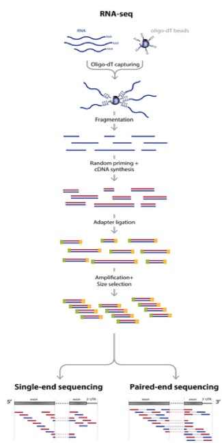
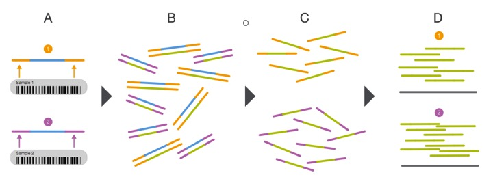

RNA-seq background information, data analysis procedure, and details of the analysis tools¶
Before we dig into the data and begin trimming and aligning the reads to the genome, I think it is useful to understand what happens after you submit your RNA to the sequencing facility. This sort of knowledge can be very useful in understanding what could potentially provide bias and any number of issues to the end dataset. In this session we will cover several things including:
- RNA-seq background information
- Basic analysis procedure
- Trimmomatic
- FastQC
- bowtie
- htseq
- edger
RNA-seq background information¶
Before we begin, let’s watch a video about how Illumina sequencing works.
This video does a pretty good job explaining how, in generalities the sequencing process works for DNA. So for sequencing RNA, the process is as follows:
Adapted from: Zhernakova et al., PLoS Genetics 2013
So actually, we aren’t sequencing RNA at all! We are sequencing the cDNA made from the RNA. RNA-seq is a high resolution next generation sequencing (NGS) method to assess the transcriptome of an organism and compare transcriptional changes between organisms/treatments to ascertain specific pathways/genes that are moving in response. But now, let’s talk about what can add bias to the data and what we do with the data to make sure that it is reasonable to proceed to further analysis steps.
But first, let’s brainstorm a little bit. Look back at the RNA-seq workflow figure above and let’s suggest a few places where things could potentially affect the output dataset.
Here are a few thoughts...
- How could the random priming step affect downstream results?
- How could RNA secondary structures affect the library preparation process?
- Would GC content be a problem?
- Could gene length cause issues?
- What might happen if you have genes with substantially different expression levels?
- During the cluster generation on the Illumina flow cell, what might happen if you have too few clusters? Too many?
- How is it possible to sequence many samples at one time?
- What if you run out of reagents from one kit and have to open another kit to finish the library preparation process?
- Could sequencing depth be an issue?
So now that you may be questioning the validity of any RNA-seq dataset, take heart! Many very smart people have thought about these issues and come up with ways to assess technical artifacts and correct for them. So again, let’s brainstorm some potential solutions to these problems. Which problems can be addressed through better chemistries/processes vs. mathematical/computational correction?
These sorts of issues should always be considered, but recognize that RNA-seq is becoming fairly commonplace and solutions to many of these questions exist. Be critical of your data and always look at the raw data.
Multiplexing the sequencing process by pooling several samples together is not only cheaper, it can overcome what are known as batch effects. Batch effects are when you have samples that correlate with one another based on batch/time/etc. instead of biological replication. This is a very real phenomenon and can be caused by using different lots of the same kit/flow cells when preparing samples! You can correct for this, but we will get there later... For now, have a look at the diagram showing how multiplexing is achieved.
From: http://www.illumina.com/content/dam/illumina-marketing/documents/products/sequencing_introduction_microbiology.pdf
This is an example of what a batch effect looks like. Note how DMSO1 and ETZ1 group together and DMSO2 and ETZ2 group together (e.g. by batch).

We can determine what is considered a “good” base call from a “bad” one through using what is known as the Phred scoring system or Q-score.
Where Q is defined as a property that is logarithmically related to the base call error probability:
Q = -10 \log_{10} P\ |\ error\ probability = P^2
So this means:

From: http://res.illumina.com/documents/products/technotes/technote_q-scores.pdf
Illumina tends to output sequence results with a Q > 30. So let’s have a look at what some raw data looks like in terms of Q-scores before and after trimming adapters and low quality reads.

This is why we do the trimming before attempting to align the reads to the reference genome. Since we are using FastQC, let’s have a look at some sample data of what good Illumina data looks like.
So, we have come to the end of the background section. Even with all of the great tools and chemistries that have been developed to handle RNA-seq datasets, the old mantra still applies: garbage in; garbage out and with great power comes great responsibility. Take care in analyzing these sorts of data as they typically influence many downstream experiments.
Questions!
Basic analysis procedure¶
Now that we have began to understand the background of RNA-seq technologies, how libraries are prepared and sequenced, and thought aboutpotential pitfalls during the data analysis process, let’s have a look at the basic workflow and some tools that we will use for each step:

Remember that we can have both single- and paired-end reads. Each type of output will require slightly different tools and procedure. The data that we will be working with is single-end Illumina reads.
- Let’s brainstorm for a minute:
- If the Illumina sequencing procedure (as seen in the video above) requires specific adapters, what are some ways we could remove them? What are some potential issues specifically with our reads that could cause misalignments or no alignments at all to a reference genome? Why don’t we use a reference transcriptome instead of a genome since RNA-seq is a transcriptional profiling experiment? What are other genomic features in bacteria that could potentially be identified using RNA-seq data?
Trimmomatic¶
Trimmomatic is a lightweight java application that can remove Illumina adapter sequences and low quality reads. It uses a sliding window to analyze chunks of each read, examining the quality score, minimum read length, if it corresponds to an adapter sequence, etc. Let’s have a look at the documentation to see what each option does.
When we run the analysis, you will likely see some output that looks like this:
TrimmomaticSE: Started with arguments: -threads 4 /mnt/home/john3434/RNAseq/Data/gly7a.fq.gz /mnt/home/john3434/RNAseq/QC/trimmedgly7a.fq.gz ILLUMINACLIP:/opt/software/Trimmomatic/0.32/adapters/TruSeq3-SE.fa:2:30:10 LEADING:3 TRAILING:3 SLIDINGWINDOW:4:15 MINLEN:36
Using Long Clipping Sequence: 'AGATCGGAAGAGCGTCGTGTAGGGAAAGAGTGTA'
Using Long Clipping Sequence: 'AGATCGGAAGAGCACACGTCTGAACTCCAGTCAC'
ILLUMINACLIP: Using 0 prefix pairs, 2 forward/reverse sequences, 0 forward only sequences, 0 reverse only sequences
Quality encoding detected as phred33
Input Reads: 100000 Surviving: 96867 (96.87%) Dropped: 3133 (3.13%)
TrimmomaticSE: Completed successfully
Note
It is important to log this output into a text file somewhere and save it (fortunately the software we are going to use will log it for you). You might want this for a report when you’re finished.
Let’s remind ourselves what each command and parameter is doing. Look through the command and discuss with a neighbor what is going on there. If you don’t remember what each parameter does, have another look at the documentation.
Let me know if you have questions by placing a red sticky note on your computer.
FastQC¶
FastQC is a piece of software that allows us to analyze the quality of our data before proceeding to aligning the reads to the reference genome. Let’s have a look again at what good Illumina data and bad Illumina data look like. This will help us determine the quality of our own sequence based on their examples.
The output from FastQC will look like this (with a different file name instead of ‘trimmedgly7a.fq.gz’:
Started analysis of trimmedgly7a.fq.gz
Approx 5% complete for trimmedgly7a.fq.gz
Approx 10% complete for trimmedgly7a.fq.gz
Approx 15% complete for trimmedgly7a.fq.gz
Approx 20% complete for trimmedgly7a.fq.gz
Approx 25% complete for trimmedgly7a.fq.gz
Approx 30% complete for trimmedgly7a.fq.gz
Approx 35% complete for trimmedgly7a.fq.gz
Approx 40% complete for trimmedgly7a.fq.gz
Approx 45% complete for trimmedgly7a.fq.gz
Approx 50% complete for trimmedgly7a.fq.gz
Approx 55% complete for trimmedgly7a.fq.gz
Approx 60% complete for trimmedgly7a.fq.gz
Approx 65% complete for trimmedgly7a.fq.gz
Approx 70% complete for trimmedgly7a.fq.gz
Approx 75% complete for trimmedgly7a.fq.gz
Approx 80% complete for trimmedgly7a.fq.gz
Approx 85% complete for trimmedgly7a.fq.gz
Approx 90% complete for trimmedgly7a.fq.gz
Approx 95% complete for trimmedgly7a.fq.gz
Analysis complete for trimmedgly7a.fq.gz
We can open the report file in a browser like FireFox. Here are two different reports report1.html and report2.html What do we think? Good or bad data?
Please work with a neighbor and discuss the FastQC analysis reports. Put a green sticky note on your computer once you have done this and viewed the results in a browser.
Presentation time!
Please have one person from each treatment group come and present a representative report from each treatment, assessing the results.
Note
Save your report so that we can compile them at the end of the module.